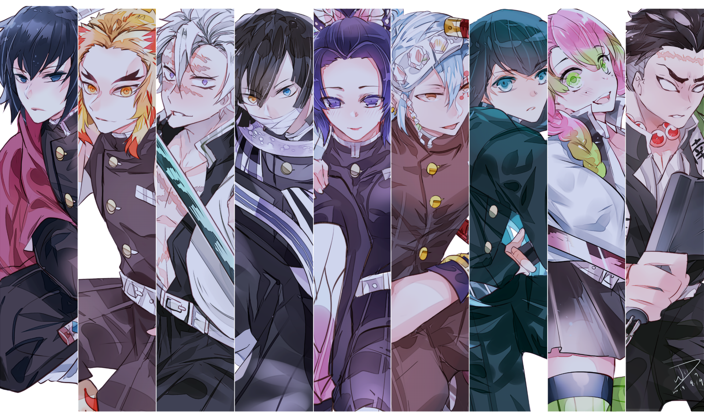
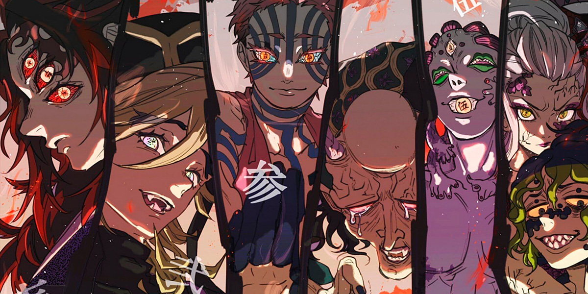
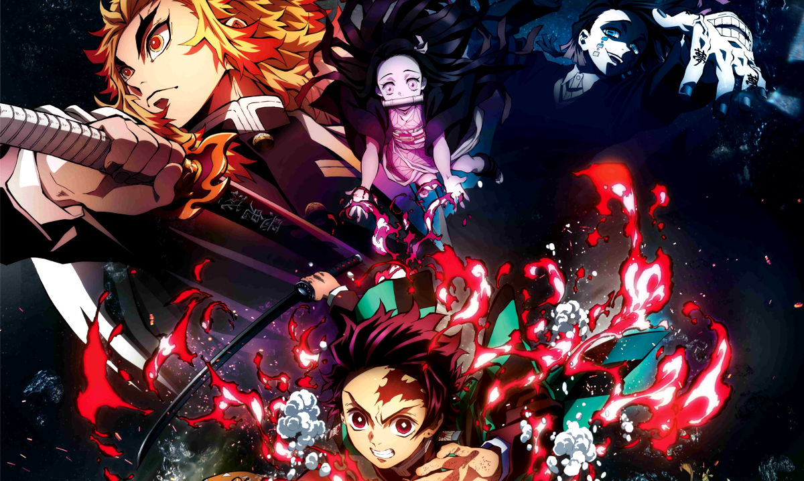

En la Era Taisho, Tanjiro Kamado es un chico inteligente
y con buen olfato cuya misión consiste en proteger
a su hermana demonio para que los cazadores de demonios
no la maten.
Además, también busca al líder de los demonios,
que fue el responsable de la muerte de su familia.
En el camino, va conociendo otras personas mientras
prosigue la búsqueda de una cura para su hermana.

Es el protagonista de la serie, un joven gentil
con mucha determinación y que no se rinde una vez tiene una meta
que alcanzar. También tiene un sentido del olfato muy desarrollado.
Se convirtió en un asesino de demonios tras un largo entrenamiento
con Sakonji Urokodaki, el maestro de la respiración estilo de
corriente de agua, que actualmente utiliza el protagonista.
También tiene control de un estilo de respiración incompleto
"respiración del dios de fuego" y como dato interesante podemos
decir que puede dar cabezazos muy fuertes con su frente,
que es tan dura como una piedra.

cazadores y demonios
Asesinos de demonios:Un término que designa tanto a la
organización, cuya misión es proteger a la humanidad de los
demonios, así como a los guerreros que la componen.
Ha existido durante mucho tiempo.
demonios:Los demonios son criaturas malvadas que se alimentan de carne y sangre humana.
Muzan Kibutsuji sería el primer demonio y, con su sangre,
puede convertir a los humanos en demonios.
Pueden cambiar la estructura de su cuerpo a voluntad,
curar sus heridas rápidamente y poseen fuerza y agilidad
sobrehumana. Solo se pueden matar al exponerlos a la luz
del sol o si se decapitan con una espada Nichirinto.

Kimetsu no Yaiba: Mugen Ressha-hen
El 28 de septiembre de 2019, inmediatamente después de la emisión del
episodio 26, se anunció una película de anime titulada Demon Slayer:
Kimetsu no Yaiba the Movie: Mugen Train (鬼 滅 の 刃 無限 列車 編, Kimetsu no Yaiba:
Mugen Ressha-hen), con el personal y el elenco repitiendo sus roles.
La película es una secuela directa de la serie de anime y cubre los eventos
del arco de la historia de "Mugen Train", capítulos cincuenta y tres al sesenta
y nueve del manga. La película se estrenó en Japón el 16 de octubre de 2020.56
La película es distribuida en Japón por Aniplex y Toho.57